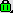
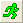
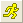

FAQ-277 分析結果が最新のものであるかどうかをどのように知ることができますか?
Recaculation-Status
最終更新: 2018/07/20
結果シートやグラフウィンドウ上の鍵マークの色によって判断できます。
- 結果が最新の場合、鍵は緑色

です。
- 結果が更新を必要とする場合、鍵は黄色 です。
- 結果の更新に問題がある場合、鍵は赤色です。
データが変更されると、このマークが黄色に変わり、再計算が必要であることを知らせます。鍵を左クリックして再計算またはパラメータを変更できます。
更新が必要な場合、標準ツールバーの再計算ボタン 
が、再計算が必要であることを示します。それは黄色 
に変わります。このボタンをクリックすると、更新が必要なプロジェクトの結果がすべて更新されます。ボタンの上にマウスを置くと、必要な更新の数を示すメッセージが表示されます。
キーワード: 錠, シンボル, 赤, 自動, 更新, 黄色